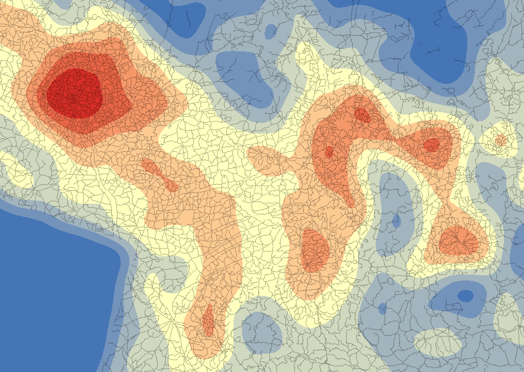
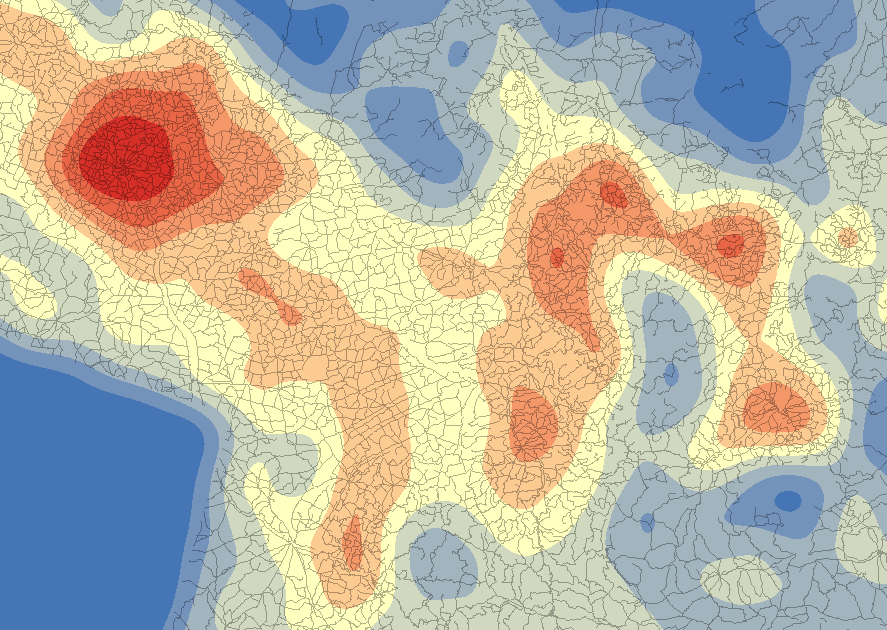
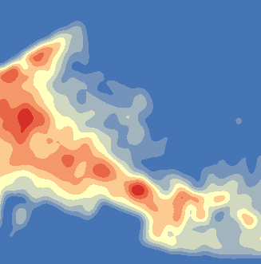
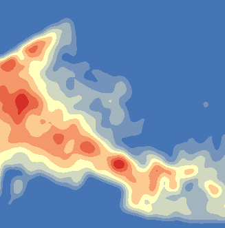

Упражнение 16 Оценка плотности распределения
16.1 Введение
Цель задания — научиться определять плотность распределения (густоту) линейных объектов с помощью метода плавающего окна.
| Параметр | Значение |
|---|---|
| Теоретическая подготовка | Растровая модель пространственных данных, фильтрация растра, ядерное сглаживание, оценка плотности распределения. |
| Практическая подготовка | Знание основных компонент интерфейса ArcGIS Desktop (каталог, таблица содержания, карта). Настройка символики и подписей объектов. Инструменты геообработки |
| Исходные данные | База данных цифровой топографической карты 1:1 000 000 на территорию России |
| Результат | Растры густоты дорожной сети, полученные методом простого подсчета длины линий и путем ядерного сглаживания с разным радиусом влияния. Карта густоты дорожной сети с компоновкой. |
| Ключевые слова | Пространственный анализ, плотность распределения, фильтрация растра, ядерное сглаживание. |
16.1.1 Контрольный лист
- Построить растры плотности и плотности ядер для линий
- Исследовать влияние радиуса вычислений на гладкость поверхности.
- Вырезать фрагмент результирующего растра на территорию России. Умножить значение плотности на 10, чтобы компенсировать эффект масштаба
- Подготовить проект карты густоты дорожной сети
16.1.2 Аннотация
Задание посвящено знакомству с анализом плотности размещения объектов на примере густоты дорожной сети. Анализ густоты является одним из фундаментальных методов исследования географических закономерностей размещения объектов, который позволяет выявить неравномерности и связать их с географическими условиями и соседством.
Для анализа густоты дорожной сети вами будет использована фильтрация данных. Подсчет густоты основан на принципе скользящего окна: поверх исходного слоя строится растровая поверхность и в заданном радиусе относительно каждой ячейки растра подсчитывается суммарная длина линий. При использовании ядерного сглаживания (кернфункции) полученное значение густоты сглаживается.
16.2 Оценка плотности дорожной сети
Создайте в директории Ex16 новую файловую базу геоданных и назовите ее Analysis
-
Назначьте созданную базу данных базой данных по умолчанию:

Добавьте на карту слой Roads из базы данных MapData.gdb в папке Ex16. Это дороги на территорию России, оцифрованные по картам масштаба 1:1 000 000.
Используя команду меню Cutomize > Extensions, включите модуль Spatial Analyst
Откройте ArcToolbox
-
Запустите инструмент Spatial Analyst Tools > Density > Line Density и заполните его параметры следующим образом:
Параметр Значение Input polyline features Roads Output cell size 10000 Output raster <путь к базе данных>/line_dens_100 Search radius 100000 Area units SQUARE_KILOMETERS Диалог примет следующий вид:

Нажмите ОК, чтобы запустить инструмент. Когда вычисления закончатся, созданная поверхность будет добавлена на карту.
Отключите слой roads и установите передискретизацию слоя line_dens_100 в режим Cubic Convolution.
-
Примените к растру цветовую шкалу от синего к красному.
Результат:

-
Запустите инструмент Spatial Analyst Tools > Density > Kernel Density и заполните его параметры аналогично предыдущему инструменту. Назовите выходную поверхность kernel_dens_100:

Примените к получившемуся слою такую же цветовую шкалу, как и предыдущему
Установите режиме передискретизации результирующего слоя Cubic Convolution
Сделайте слой дорог черного цвета и установите ему прозрачность 70%.
-
Сравните растры, полученные методами Line Density (простой подсчет длины линий в пределах плавающего окна) и Kernel Density (подсчет с использованием кернфункции). Какой тип оператора дает более ровную поверхность?
 

16.3 Оценка влияния радиуса поиска
Создайте методом Kernel Density еще два растра густоты дорожной сети с радиусом поиска (Search radius) 200 000 и 400 000 м соответственно и разрешением (Output cell size) равным 20000 м. Назовите их kernel_dens_200 и kernel_dens_400 соответственно.
Примените к полученным растрам настройки отображения по аналогии с предыдущими результатами.
-
Оцените влияние радиуса поиска на сглаженность поверхности:
 

Сохраните карту в каталог Ex16 под названием Roads.mxd
16.4 Масштабирование значение показателя
Полученные растры отражают искаженное значение плотности, поскольку исходный слой дорог содержит не все дороги. Их количество преуменьшено примерно в 10 раз (карта масштаба 1:1 000 000. Чтобы привести значение густоты к должно величине, необходимо умножить растр на 10.
Запустите инструмент Spatial Analyst > Math > Times
-
Заполните его параметры в соответствии со следующим диалогом и запустите:

16.5 Оформление слоя густоты дорожной сети
Оставьте включенным только слой kernel_dens_100_x10
Добавьте на карту слой countries из базы данных MapData.gdb
Уберите у него заливку, а обводку установите черной, толщиной 1,5 пиксела.
Выделите на карте полигон России.
-
Запустите инструмент Spatial Analyst > Extraction > Extract by Mask, чтобы обрезать растр по границе России. Заполните его параметры в соответствии со следующим диалогом:

-
Примените к полученному растру следующие настройки отображения:
Параметр Значение Метод отображения Classified Метод классификации Natural Breaks (Jenks) Число классов 9 Шкала От синего к красному Округлите значения полученных границ классов в столбце Label до одного-двух знаков после запятой и отсортируйте классы по убыванию значений.
Результат:

-
Переименуйте слой в «Густота дорожной сети», а заголовок показателя в «км/кв.км»
Результат:

16.6 Оформление итоговой карты
Выделите полигоны России, Аральского и Каспийского морей в слое Countries
Инвертируйте выборку.
Создайте новый слой на основе выборки и назовите его «Страны». Присвойте ему символ с белой заливкой и черной обводкой толщиной 1,5 пункта.
Переименуйте исходный слой Countries в “Границы”
-
Установите заливку фрейма данных голубого цвета
Результат:

Добавьте на карту слой Cities, примените к нему символ черного кружка диаметром 3 пункта и включите подписи по полю Name_normal шрифтом Tahoma 8 кегля.
-
Оформите компоновку карты в соответствии со следующим образцом:

Сохраните документ карты.
16.7 Контрольные вопросы
Для чего нужна оценка плотности пространственного распределения?
Как работает линейная оценка плостности распределения методом плавающего окна?
Как работает ядерная оценка плотности распределения (оценка по методу Парзена-Розенблатта)?
Как влияет на результат оценки величина радиуса поиска?